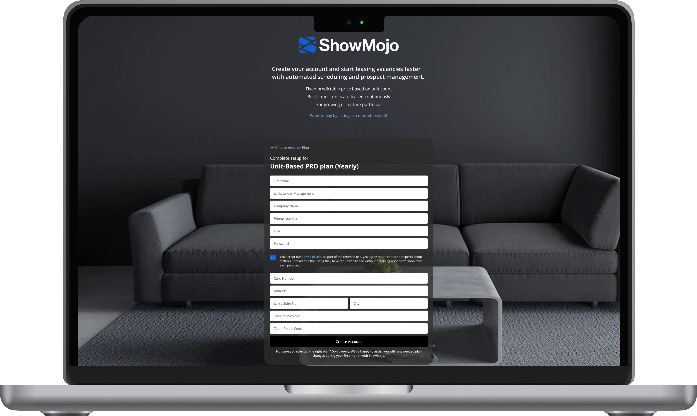

Pricing & Plan Selection Redesign
Context
ShowMojo's pricing and signup experience had evolved over time into a combination of different pricing models, plan tiers, hardware add-ons, and operational assumptions that were difficult for customers to understand.
The interface exposed a large amount of information, but users often struggled to understand:
- which pricing model fit their business
- what the difference between Pro and Ultra actually was
- why some customers preferred listing-based pricing while others preferred unit-based pricing
- how hardware, automation, and operational scale affected pricing decisions
The result was a signup experience that often felt overwhelming, difficult to explain, and disconnected from how customers thought about their leasing process in practice.

Goals
My goal was not simply to redesign the pricing page visually, but to reframe plan selection around the actual operational jobs customers were trying to solve.
Instead of treating pricing as a feature comparison problem, I focused on understanding:
- how customers mentally model leasing operations
- what triggers customers to upgrade or change pricing models
- which operational pressures create willingness to pay
- how plan choice changes as operational maturity increases
The challenge was to simplify decision-making without hiding important operational trade-offs or creating misleading "cheaper vs more expensive" positioning.

Approach
To better understand the problem, I analyzed customer behavior, operational workflows, support conversations, onboarding friction, and internal assumptions across teams.
I reframed the experience using Jobs To Be Done principles and mapped:
- listing-based pricing to financial flexibility and vacancy-driven workflows
- unit-based pricing to operational stability and portfolio-level thinking
- Pro plans to reducing manual effort
- Ultra plans to reducing operational losses at scale
This helped separate two concepts that were previously mixed together:
- how customers want to pay
- how operationally mature their leasing process is
I also explored how customers gradually "arrive" at hiring ShowMojo — moving from manual workflows, to fragmented tooling, to operational pain, and eventually to system-level automation needs.
Customers don't adopt leasing automation because they want more features. They adopt it when their current operational model stops scaling.
Based on these insights, I iterated on multiple pricing structures, signup flows, and explanatory patterns to reduce cognitive overload while preserving transparency around operational trade-offs.
Outcomes
The redesigned pricing approach helped shift internal conversations away from feature comparison tables and toward operational reasoning.
This redesign has not yet been fully implemented in production, so its impact has not been measured directly.
However, the success of the approach would be evaluated through metrics like signup completion rate, drop-offs during plan selection, how often users switch pricing models during signup, upgrade rates between Pro and Ultra, and support or sales feedback about customer confusion around pricing.